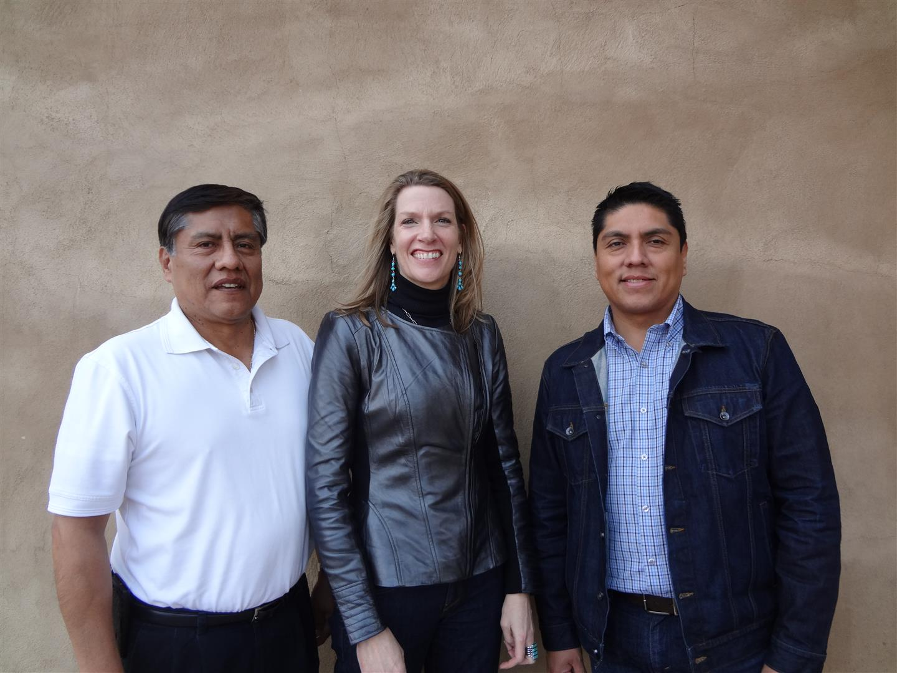

RUNTIME: 33:22
GENRES: Educational, Environmental, Period/Historical, Culture, Art, Spiritual, Personal Narrative, Social Issue, History, Architecture
NICHES: Native American, Women, Sustainability


The Haak'ume people of Acoma Pueblo in New Mexico were faced with a challenge when their visitor center burned down in 2000: How to reconstruct a place that was as welcoming to their people as to visitors, would tell the story of their people, and also be a bridge between cultural and 'green' interpretations of sustainability. What they created was much more than that. This is the story of the Place that the architects and the Haaku'me people created together.
Synopsis
As darkness gives way to light, we hear the Emergence story of the Haak'u (Acoma) People and how they arrived at modern day Acoma. We visit the event of the previous structure burning down and learn about the opportunities that loss offered: the newly cleared space allowed the tribe to rethink the way they were engaging with themselves, and with tourists. We learn how the tribe and its extraordinary design team would ultimately create a modern day "great house" that would tell the story of the Acoma's people's architectural and cultural heritage.
Two Acoma grandmothers share what it was like to learn pottery from their grandparents and how they are working within the tradition today. They invite us in to what life was once like, how it is now, and the manners in which they are working to pass on the tradition of pottery – using ancient techniques and ethnobotany in the same ways they were taught, and in which their grandparents were taught. We learn how the building incorporates pottery as a means of storytelling, and how this connects to a winter Acoma/Haak'ume tradition of sharing folk tales.
Architect Barbara Felix and former Center Director Brian Vallo share the six sacred building elements used to weave together the old and the new in the modern structure: stone, wood, mica, corn, mud and pottery. We see how those elements have been layered with architectural details from ancestral homelands at Chaco Canyon, Aztec Ruins, Mesa Verde and the Moss Ruins. We learn of the Haak'ume (Acoma people's) relationship to earth, wind, water and the stars, their ties to the landscape and the sacred mountains and fields in the four directions.
We delve into what happens when a cultural fabric of honoring deep traditions comes up against a need to address contemporary ideas of sustainability. We learn how modern needs can be supplemented by ancient methods of passive solar design that have been used in Acoma for more than 600 years. Finally, we take a tour of the ancient and modern adaptations of the ideas and systems that make up this extraordinary structure – recently named the Southwest's Best Cultural Attraction – learning that this building, like the Acoma people, will leave its mark on you.
This film is entirely in the voice of the Acoma people and their project architect, Barbara Felix. The textures of the filmmaking are a reflection of the textures of the structure, as well as the stories and the people that have informed the making of that structure... and this film.
Director's Statement

We were filming a local public television series celebrating 1000 years of truly sustainable architecture built by the peoples of the American Southwest, filming mostly in New Mexico. Our second filming location was at Acoma Pueblo's Sky City Cultural Center.
When we arrived, what seemed at first like "just another building" revealed itself to us... as an experiential, touchable story... one that took us on a journey through the history and culture of the Haak'ume people of Acoma pueblo... through their observations of their Place in the world... stories of growing up Haak'ume... of pottery making, traditions lost and found, teaching their children... stories of architecture that had meaning and a connection to their own migration and the Places that they connected to... and their ancestors (who they speak of in the present tense). There's a lesson in this building for all of us. Not JUST about the Haak'ume, but especially about the Haak'ume. If we pay attention, it might just lead us back to a way of seeing the world, our buildings, and ourselves in a living relationship with our past, present, and future, to Nature, to Culture, and to Place.
And it feels... like HOME. ♥
Cast
We were filming a local public television series celebrating 1000 years of truly sustainable architecture built by the peoples of the American Southwest, filming mostly in New Mexico. Our second filming location was at Acoma Pueblo's Sky City Cultural Center.

Emerson Vallo (Cultural Center Director), Barbara Felix (Architect), Brian Vallo (Former Cultural Center Director)
Prudy Correa (Building Committee), Marilyn Ray (Commissioned Potter)
Crew
Rachel Preston Prinz
First time Director/Producer Rachel Preston Prinz heads up an acclaimed architectural design and preservation practice based in New Mexico. Her work investigates traditional and modern approaches to architecture, agriculture, culture, and landscape to address how we might not only survive, but also thrive, and to do so, sustainably.
Twitter | LinkedIn
Suzenne "Zenne" Seradwyn
Suzenne "Zenne" Seradwyn, our assistant Director and Visual Editor, has worked as an actor, producer, videographer and editor on over 40 feature length and short films and numerous globally syndicated television shows.
Pure Mother Love Productions
Arianna Shewfelt
Our Assistant Producer is Arianna Shewfelt. Arianna recently moved to Albuquerque from College Station, TX where she studied Psychology and Creative Writing at Texas A&M University. She enjoys the natural beauty of New Mexico and spends as much time as possible in the mountains. She has a passion for great design and is excited for the opportunity to work with such a talented team.
Daniel Sonis
Cinematography: Daniel Sonis is a musician, music producer, studio owner, composer, and filmmaker. He has made more than 100 short films to support the missions of numerous nonprofits, including The Kellogg Foundation, The McCune Foundation, and The University of New Mexico.